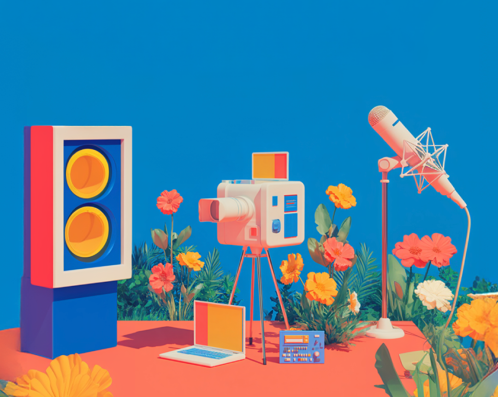
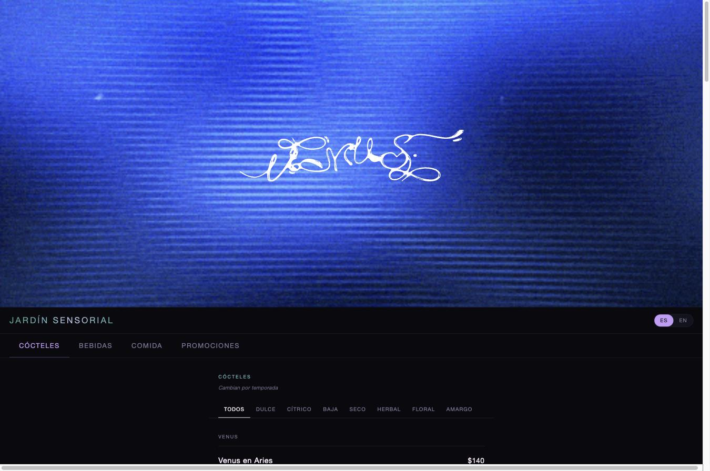

Creative direction, brand design and automated systems for teams who need both craft and code.
10+ years across broadcast media, digital agencies and independent products, designing what people see and, increasingly, building what runs behind it.
Work

SJRT Broadcast Network
Daily editorial and campaign design for three public broadcast channels, delivered on same-day turnaround.

Cabrona
Brand identity and AI-generated content system for an independent accessories label.

Venus
Bilingual digital menu with a flavor-profile filter system, designed and built for a cocktail bar.

Pomodoro
Multi-timer focus app designed and built end to end for web.

Katfish: Music Video
Visual direction for an independent artist's music video, built around mood and generative motion.

OvvO
Generative visual identity built with p5.js, connected to an automated posting system.

AI & Generative
Ongoing experiments in Midjourney, Stable Diffusion and Runway, developing prompt craft and image evaluation.

Weather Postcards
Generative content automation system publishing branded postcards live from a weather API.

Golcam
Automated goal-capture and WhatsApp delivery system built end to end for a five-a-side football venue.

Bike Punk Flyers
Flyer series for a self-organized nocturnal bike ride, designed without a client-approval chain.
Skills
Tools & disciplinesAbout
Pablo Islas · GDL, Mexico
I'm a creative with 10+ years of experience in visual communication, branding and digital content, and, more recently, in building the automated systems that run behind that content.
Currently at SJRT (Jalisco TV, Radio & News), designing for real audiences in real formats. Before that, I led creative teams at a digital marketing agency across branding, social media and political campaigns.
My work blends graphic design, motion, generative AI tools and creative coding.
B.A. in Integral Design from ITESO. Technical Degree in Audiovisual Media from CAAV. Data Analytics certification from TripleTen. CS50 Python via HarvardX.